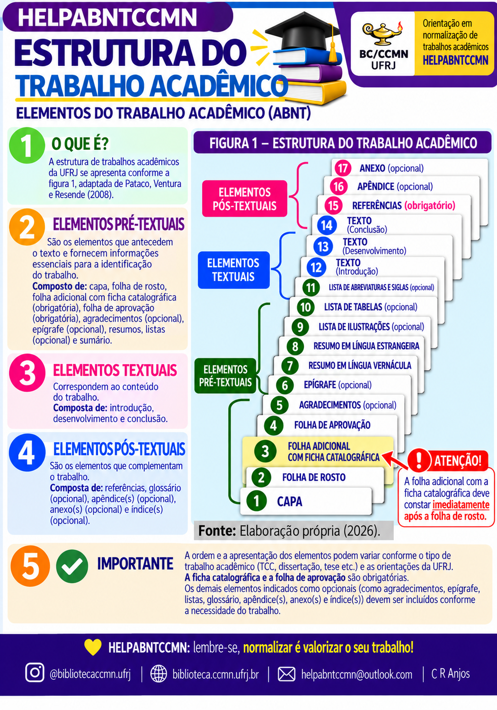
Estrutura do trabalho acadêmico
Visão geral dos elementos pré-textuais, textuais e pós-textuais.
BIBLIOTECA DO CCMN/UFRJ
Encontre, de forma rápida e visual, orientações para apresentar seu trabalho acadêmico conforme as normas da ABNT.
Ver infográficos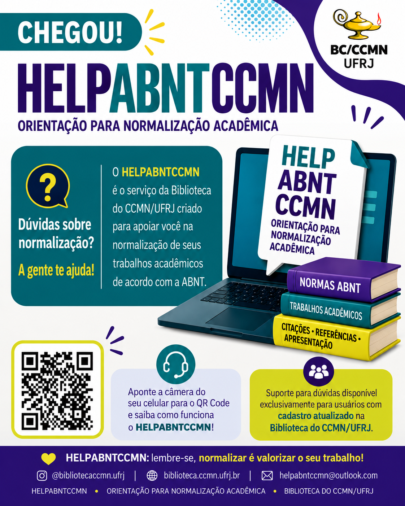
CONSULTE POR TEMA
Clique em qualquer material para ampliar e consultar as orientações.

Visão geral dos elementos pré-textuais, textuais e pós-textuais.
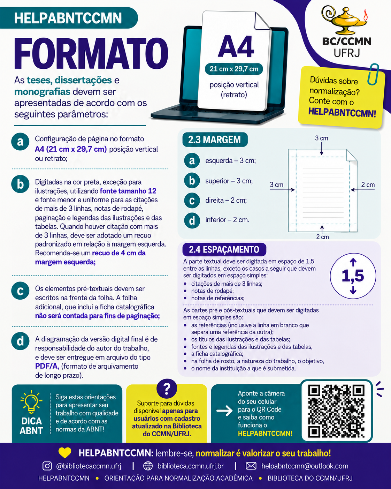
Orientações sobre formato do papel, margens, fonte, espaçamento e apresentação gráfica de trabalhos acadêmicos.
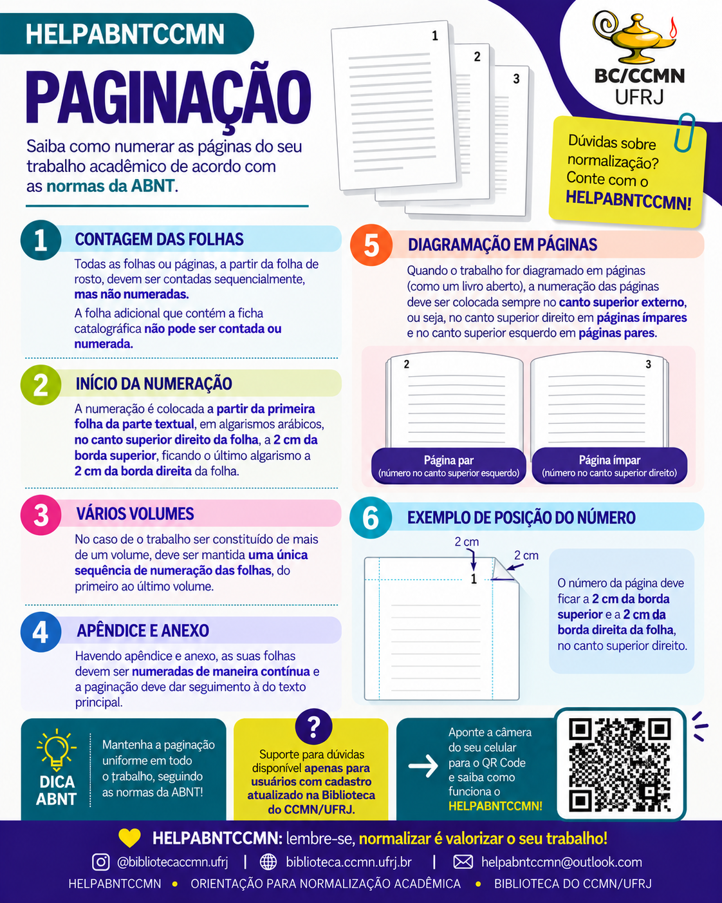
Orientações sobre contagem das folhas, início da numeração e posicionamento dos números de página em trabalhos acadêmicos.
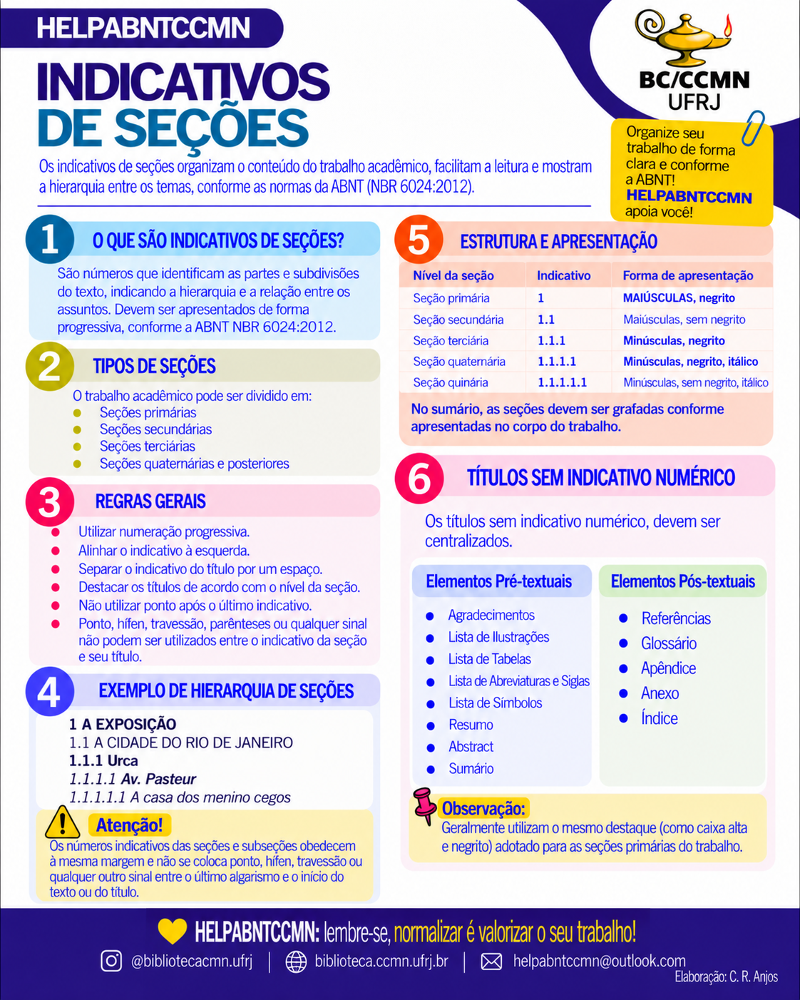
Orientações sobre numeração progressiva, hierarquia e apresentação das seções e subseções dos trabalhos acadêmicos.
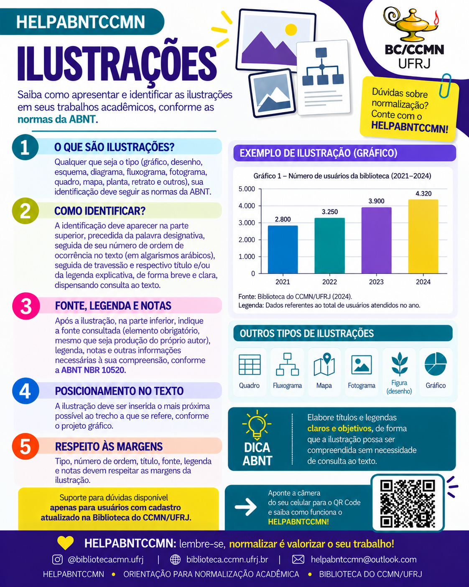
O infográfico apresenta orientações para a identificação e apresentação de ilustrações em trabalhos acadêmicos. Explica o conceito de ilustração e apresenta exemplos de diferentes tipos, como gráficos, quadros, mapas, fotografias e fluxogramas. Também aborda a identificação desses elementos, incluindo a palavra designativa, o número de ordem e o título ou legenda.
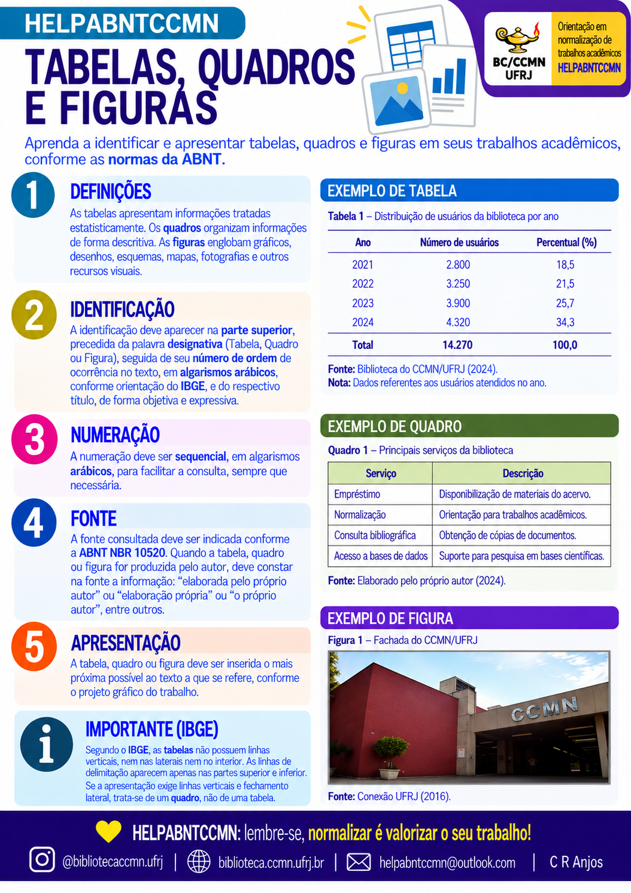
O infográfico apresenta orientações para a identificação e apresentação de tabelas, quadros e figuras em trabalhos acadêmicos. Explica as diferenças entre esses recursos, aborda sua identificação, numeração e indicação de fontes, além de apresentar exemplos de tabela, quadro e figura.
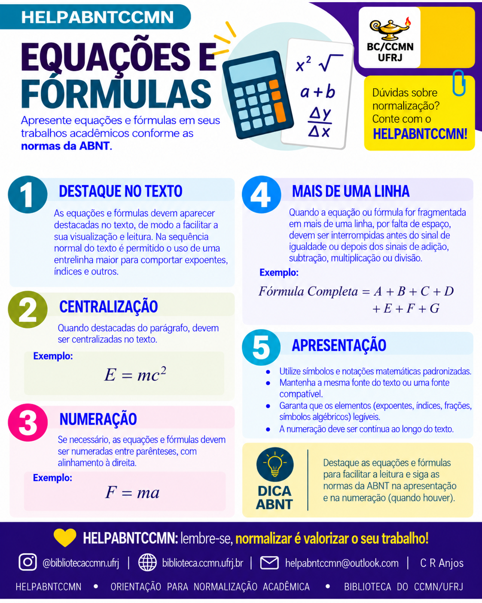
O infográfico apresenta orientações para a apresentação de equações e fórmulas em trabalhos acadêmicos. Explica que devem aparecer destacadas no texto e ser centralizadas quando destacadas do parágrafo. Orienta sobre a numeração, quando necessária, e o alinhamento de fórmulas que ocupam mais de uma linha.
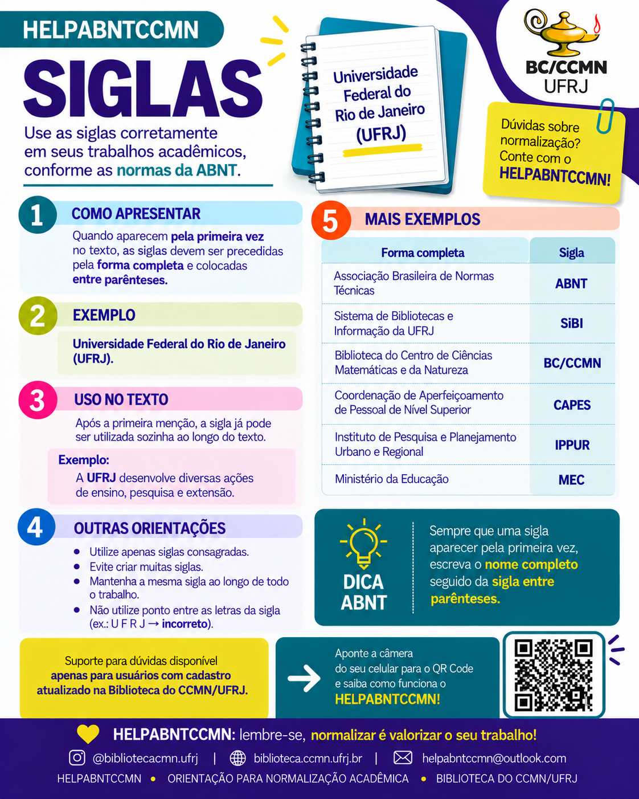
O infográfico apresenta orientações para o uso de siglas em trabalhos acadêmicos. Explica que, na primeira ocorrência no texto, a sigla deve ser precedida pela forma completa do nome, seguida da sigla entre parênteses.
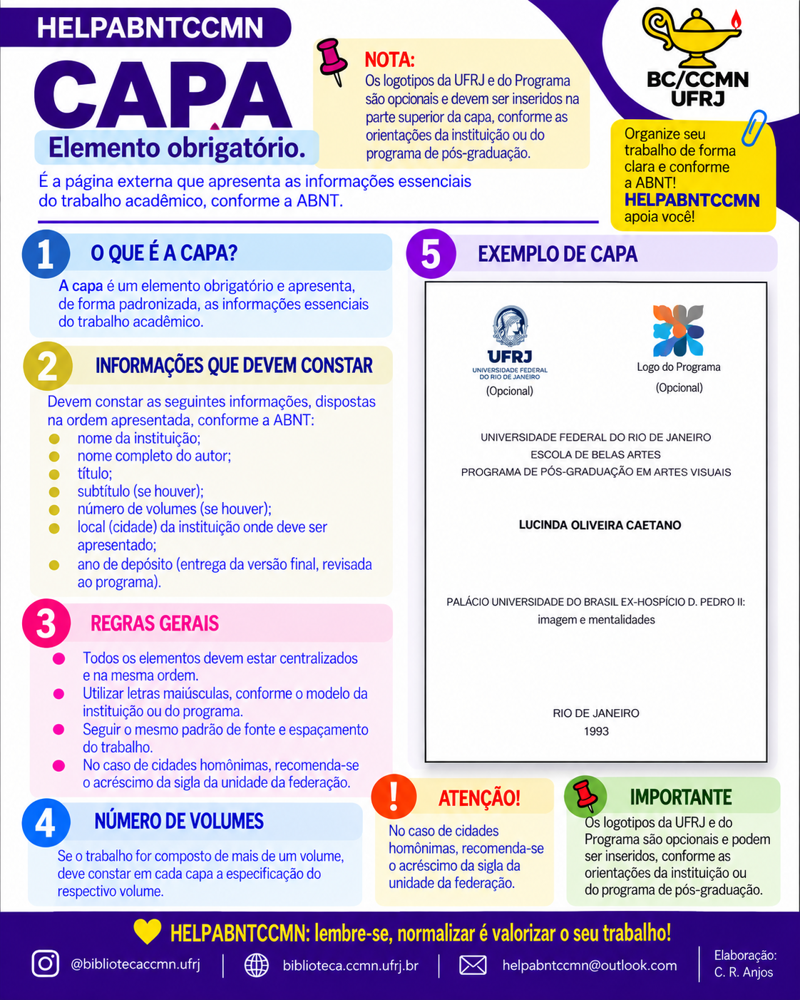
O infográfico apresenta orientações para a elaboração da capa de trabalhos acadêmicos. Explica sua função como elemento obrigatório e relaciona as informações que devem constar, como instituição, nome do autor, título, subtítulo, número de volumes, local e ano de depósito.

O infográfico apresenta orientações para a elaboração da folha de rosto de trabalhos acadêmicos. Explica sua função como elemento obrigatório e relaciona as informações que devem constar, como nome completo do autor, título, subtítulo, número de volumes, natureza e objetivo do trabalho, orientador e coorientador, local e ano de depósito. Apresenta também um exemplo de folha de rosto.

O infográfico apresenta orientações sobre a folha adicional para teses e dissertações dos programas de pós-graduação da UFRJ. Explica sua finalidade e a obrigatoriedade de inclusão a partir de agosto de 2026. Apresenta as informações que devem constar no documento, conforme o modelo do programa de pós-graduação e os dados da Coleta CAPES. Também aborda a incorporação da ficha catalográfica e a importância da folha adicional para a padronização, preservação e divulgação da produção acadêmica.
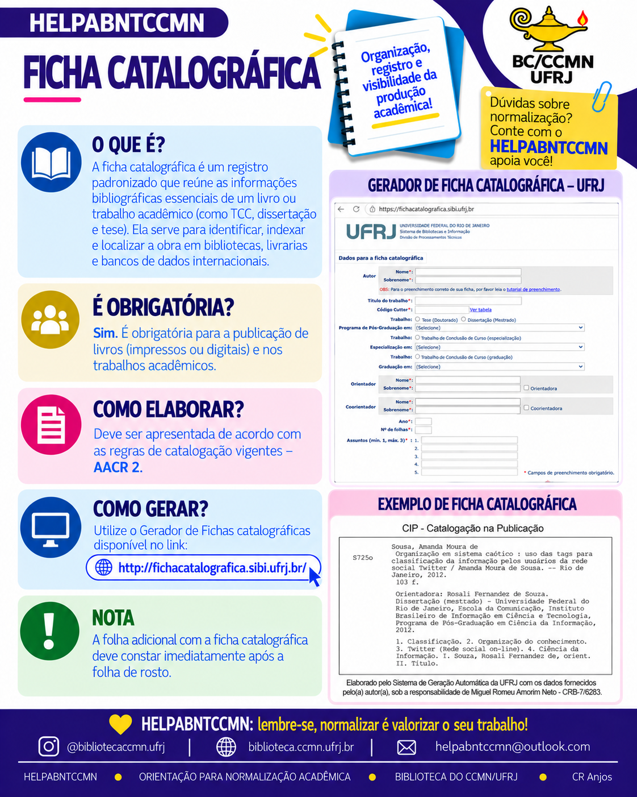
O infográfico apresenta orientações sobre a ficha catalográfica em trabalhos acadêmicos. Explica sua função como registro padronizado de informações bibliográficas essenciais para identificar, recuperar e localizar uma obra. Informa sobre sua obrigatoriedade na publicação de livros e em trabalhos acadêmicos, apresenta orientações para sua elaboração conforme as regras de catalogação vigentes e indica o Gerador de Fichas Catalográficas da UFRJ como ferramenta para sua emissão. Também destaca que a ficha catalográfica deve ser inserida após a folha adicional.

Orientações sobre os elementos e a apresentação da folha de aprovação.

Dedicatória, agradecimentos, epígrafe e listas de ilustrações, quadros, tabelas, abreviaturas, siglas e símbolos.
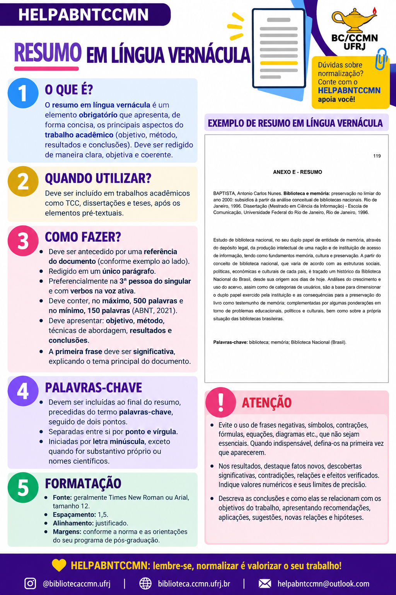
Orientações para elaboração do resumo em português.
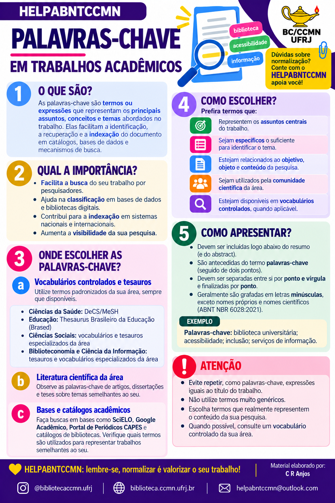
Como escolher e apresentar palavras-chave em trabalhos acadêmicos.
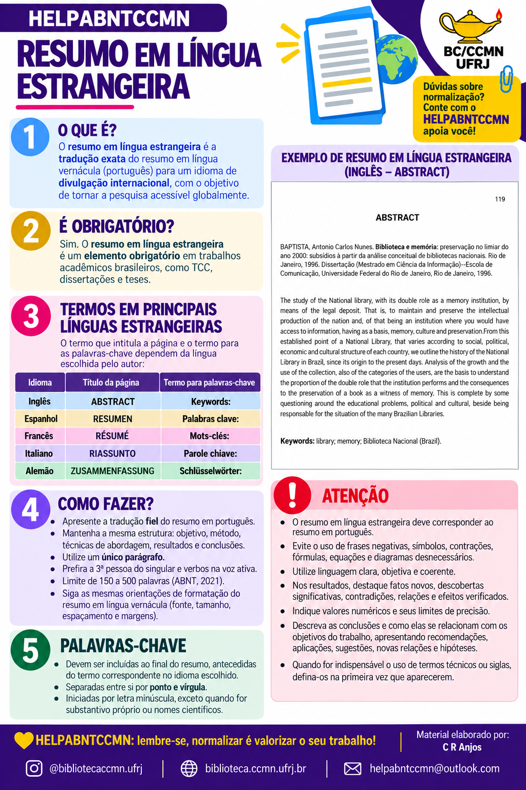
Orientações para elaboração do resumo em língua estrangeira, destinado à divulgação internacional.
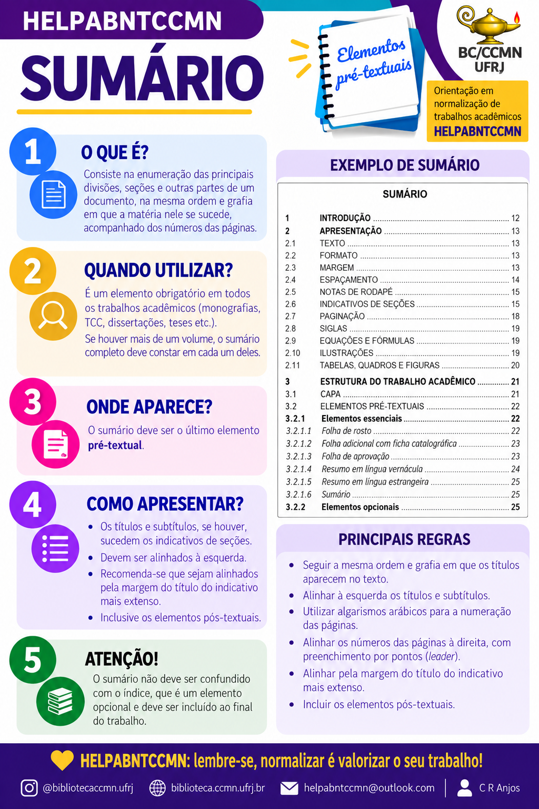
Último elemento pré-textual: enumeração das principais divisões, seções e outras partes do trabalho.

Orientações sobre introdução, desenvolvimento e conclusão do trabalho acadêmico.
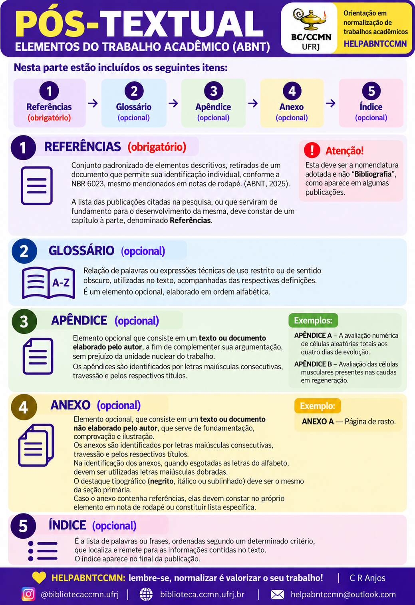
Orientações sobre referências, glossário, apêndice, anexo e índice.

Orientações sobre citação direta, citação indireta e citação de citação (apud).

Orientações sobre notas explicativas, notas de referência e sua apresentação.

Orientações sobre apud e expressões utilizadas em notas.

Apresenta o conceito de referências e orientações gerais para sua organização e formatação conforme a ABNT NBR 6023:2025, incluindo espaçamento, alinhamento, recursos tipográficos e exemplo de apresentação.
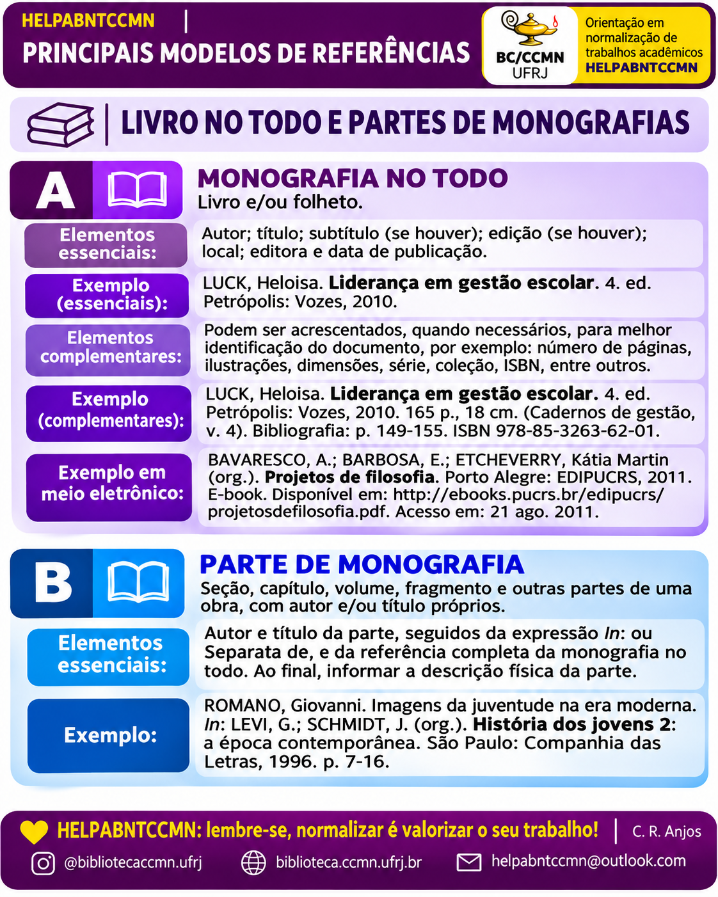
Uma monografia no todo é uma publicação considerada em sua totalidade, como um livro ou uma obra completa, com referência ao conjunto do documento. Já as partes de monografias correspondem a trechos ou subdivisões de uma publicação, como capítulos, seções ou fragmentos, que podem ter autoria própria e integrar uma obra organizada por um ou mais autores.
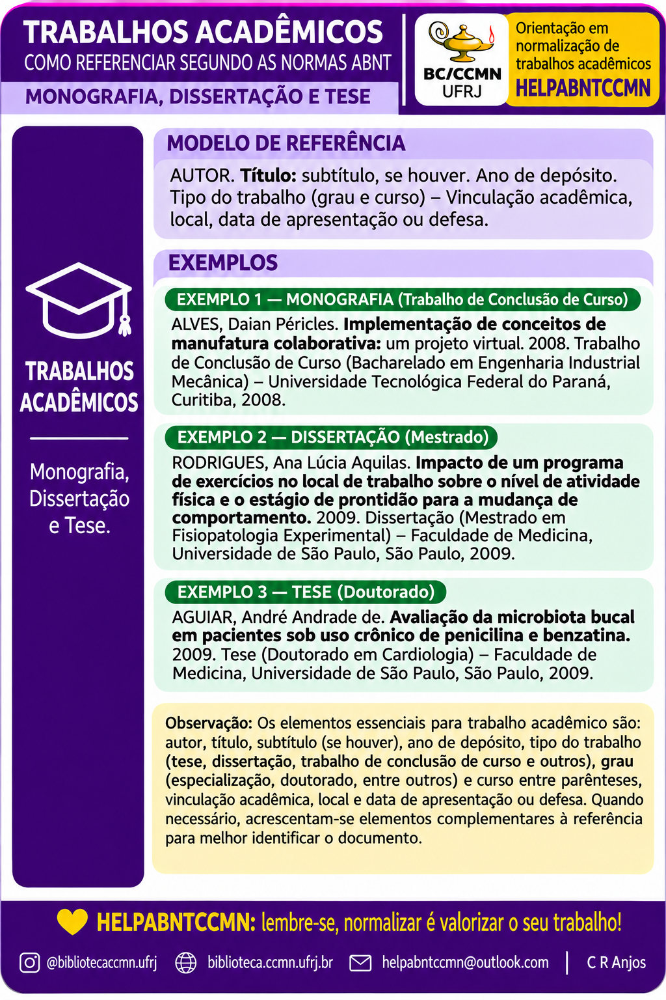
Trabalhos acadêmicos são documentos elaborados no âmbito de cursos de graduação e pós-graduação, com a finalidade de apresentar os resultados de estudos e pesquisas. Conforme o nível de formação e as exigências institucionais, podem ser apresentados como Trabalho de Conclusão de Curso (TCC), dissertação ou tese. O TCC é geralmente associado à graduação e à especialização; a dissertação, ao mestrado; e a tese, ao doutorado, devendo esta apresentar contribuição original para a área do conhecimento.
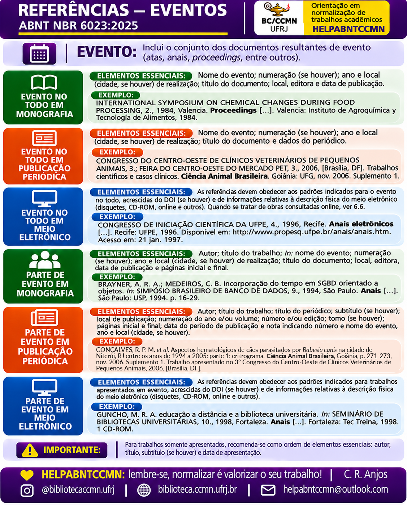
Trabalhos apresentados em eventos são comunicações acadêmicas ou científicas, como artigos completos, resumos expandidos e resumos simples, submetidas a eventos acadêmicos ou profissionais, como congressos, simpósios, seminários, encontros e conferências. Quando publicados, podem integrar anais, atas ou cadernos de resumos, contribuindo para o registro e a divulgação dos resultados de pesquisas e experiências junto à comunidade da área.

Uma coleção de publicação periódica corresponde ao conjunto de fascículos ou números publicados sob um mesmo título, como revistas científicas, jornais e boletins. Sua referência no todo é utilizada quando se deseja identificar a publicação seriada em sua totalidade, considerando o título, o local, a editora e as datas de início e encerramento da publicação, quando houver.

Partes de publicação periódica correspondem a conteúdos específicos publicados em revistas, jornais e boletins, como artigos, comunicações, editoriais, entrevistas, resenhas e reportagens. Sua referência é utilizada quando se deseja identificar um conteúdo particular, publicado em determinado volume, número ou fascículo da publicação.

A patente é um título de propriedade temporária concedido pelo Estado, que assegura ao titular direitos de exclusividade sobre uma invenção ou modelo de utilidade, conforme os requisitos legais. O documento identifica a criação protegida e apresenta informações como inventor, título, depositante ou titular, número e datas de depósito e concessão.

Documentos cartográficos são materiais que representam informações espaciais e geográficas, como atlas, mapas, globos e fotografias aéreas. São utilizados para representar territórios, localizar lugares, analisar fenômenos espaciais e apoiar estudos geográficos, ambientais e de planejamento.

Correspondência compreende documentos de comunicação entre pessoas ou instituições, como cartas, bilhetes, cartões e correspondências disponíveis em meio eletrônico, incluindo mensagens e e-mails. Esses documentos podem registrar informações pessoais, institucionais, administrativas ou históricas e servir como fontes para pesquisas.

A legislação reúne atos normativos que estabelecem direitos, deveres e regras para a sociedade e a administração pública. Inclui documentos como a Constituição, emendas constitucionais, leis, decretos, medidas provisórias, portarias e resoluções. A referência desses documentos permite identificar sua origem, numeração, data de publicação e demais informações necessárias à sua localização.

Jurisprudência corresponde ao conjunto de decisões e entendimentos dos tribunais sobre questões jurídicas, abrangendo acórdãos, súmulas e outras decisões judiciais. Essas manifestações contribuem para orientar a interpretação e a aplicação das leis em casos semelhantes.

Atos administrativos normativos são determinações gerais expedidas por autoridades ou órgãos da administração pública para regulamentar e orientar a aplicação das leis. Incluem portarias, resoluções, instruções normativas, deliberações e regimentos.

Compreende documentos jurídicos disponibilizados ou consultados em meio digital, como leis, decretos, decisões judiciais, atos administrativos e registros cartoriais. A referência deve identificar o documento e informar o endereço eletrônico e a data de acesso.

Documentos civis e de cartórios são registros oficiais emitidos por cartórios e órgãos competentes para comprovar fatos, atos e situações jurídicas. Incluem certidões de nascimento, casamento e óbito, escrituras públicas, procurações e outros registros. A referência deve identificar o tipo de documento, o cartório ou órgão expedidor e as informações necessárias à sua localização.

Compreende produções que apresentam imagens em movimento, com ou sem som, registradas em suportes físicos ou digitais. Inclui filmes, documentários, vídeos, gravações de eventos e produções disponíveis em plataformas digitais. A referência deve apresentar os elementos necessários à identificação da obra, como título, direção, produção, local, data e suporte ou endereço eletrônico, conforme o documento consultado.

Abrange registros de conteúdo sonoro, publicados em suportes físicos ou digitais, como discos, CDs, arquivos de áudio, podcasts, entrevistas, audiolivros e programas de rádio. A referência deve identificar a gravação, seus responsáveis e os dados de publicação ou disponibilização, incluindo o suporte ou endereço eletrônico, quando aplicável.

Orientações e modelos para elaborar referências de postagens publicadas em blogs.

Orientações e modelos para elaborar referências de publicações feitas no Facebook, incluindo conteúdos compartilhados em páginas e perfis.